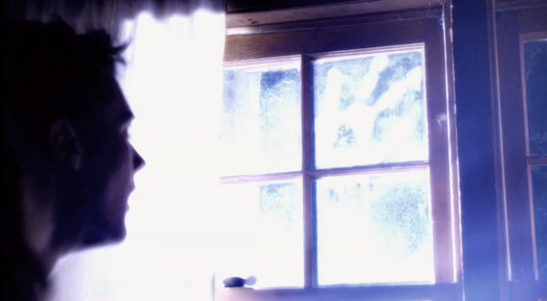

Based on a real-life Brown Mountain Lights phenomenon reported near Brown Mountain in North Carolina, this is a ‘found footage’ film depicting an ordeal of Morris family while on a camping trip in a remote, sparsely populated woodland area near the aforementioned Brown Mountain, North Carolina.
On the last night of their trip, the family, consisting of Riley - an eleven year old autistic boy, his older brother Corey, sister Jillian and their parents Peter and Katie, observe three inexplicable star-like objects moving in the sky.
The following morning they leave the camping site and things start to go pear-shaped from that point on. Peter, who is driving, loses his bearing after the GPS fails, then cell phone signal disappears, and when Peter announces that he can't find the way out of the woods and the car is running low on fuel, a real sense of panic sets in. Unfortunately, the family don't know that the worst is yet to come...
The film is centred upon Riley's continuous use of his camcorder throughout his family’s ordeal (thus creating a video journal that will be later found, forming the narrative of this ‘found footage’ movie) and gives a good rationale for Riley to continue filming even in the situations when any other sane person would drop the camera and start running, hinting that Riley is using the camcorder as a coping mechanism for his autistic condition. Apparently, a psychologist told the film director that he had treated an autistic child who videotaped everything that he did.
The plot unravels along the familiar lines: bird flocks hitting the windows of the car, far-too-bright-to-bear sterile white lights flooding the rooms through the closed window shutters, eerie inhumanly-looking silhouettes lurking in the dark - Alien Abduction has it all. Despite – or perhaps because of – all this fairly generic ingredients, seen in one form or another many times before, the film fails to capitalise

on the interesting premise and it's ultimately rather unsatisfying as both 'found footage' science fiction film and as a horror movie.